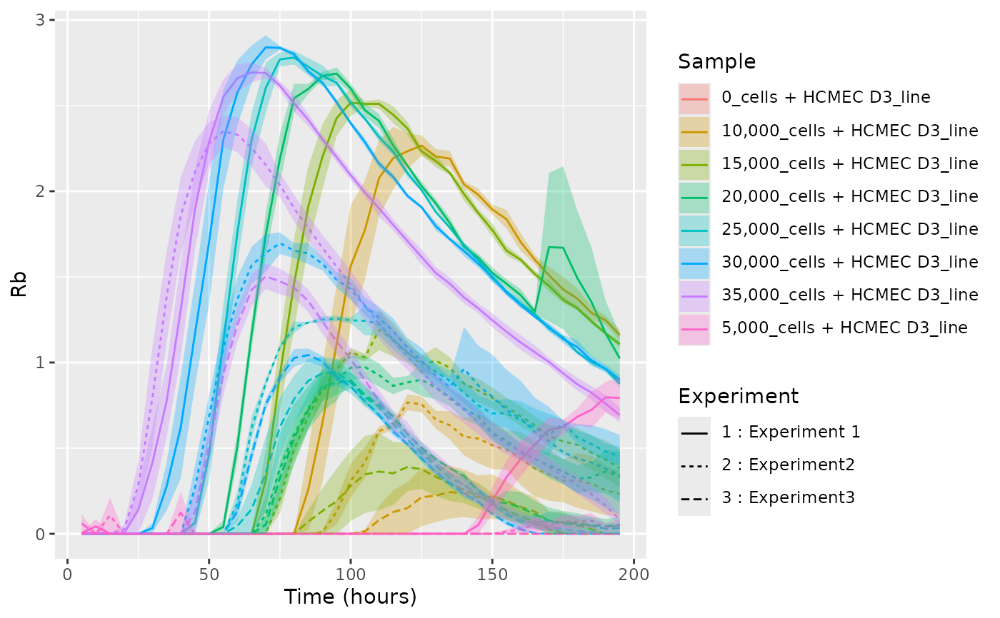
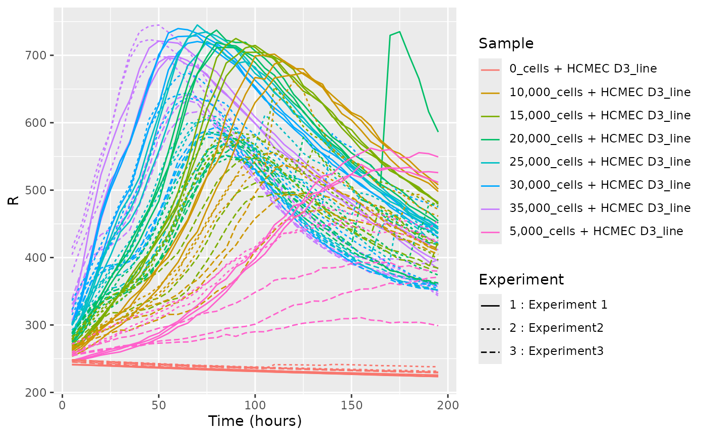

Plot a line graph with vascr
Usage
vascr_plot_line(
data.df,
errorbars = Inf,
alpha = 0.3,
text_labels = TRUE,
facet_expt = TRUE,
show_linetypes = TRUE,
explanatory = FALSE
)Arguments
- data.df
The vascr data set to plot
- errorbars
Type of error bars, Inf for ribbons, 0 for no errors and any integer to plot every nth line
- alpha
Transparency of the error ribbon plotted
- text_labels
Show or hide well labels
- facet_expt
Facet out different experiments, defaults to TRUE
- show_linetypes
Include the line type for each experiment in the key. Default TRUE
- explanatory
Whether to include commentary about unit meaning on y axis (default TRUE)
Examples
vascr_plot_line(data.df = growth.df %>% vascr_subset(unit = "Rb"))
vascr_plot_line(growth.df %>% vascr_subset(unit = "Rb") %>% vascr_summarise(level = "experiments"))

data.df = growth.df %>% vascr_subset(unit = "Rb") %>% vascr_summarise(level = "summary")
vascr_plot_line(data.df, text_labels = FALSE)
#> Warning: Removed 39 rows containing missing values or values outside the scale range
#> (`geom_ribbon()`).
growth.df %>% vascr_subset(unit = "R", frequency = 4000) %>%
vascr_plot_line(facet = FALSE)

growth.df %>% vascr_subset(unit = "R", frequency = 4000) %>%
vascr_plot_line(explanatory = TRUE)